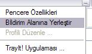

|
Tray It!
Copyright © 1999-2007 by Igor
Nys
Gördüðünüz gibi bu
yardým dosyasý tam hazýr deðil. Programý
beðendiyseniz, güzel bir yardým dosyasý
oluþturmak için bana yardým edin, "Hakkýnda"
sekmesini açýn ve en üstteki linke týklayarak bana
kýsa bir e-posta atýn.
|
|
|
|
Tanýtým
TrayIt! küçültülmüþ pencereler için deðerli görev çubuðu alanýný azaltmaya yarar.
TrayIt! uygulanan her uygulama için bildirim alanýnda bir simge oluþturur.
(Bildirim alaný saatin yanýndaki bölgedir.) Uygulamanýn penceresi küçültüðünde bu simge görev çubuðundaki her zamanki "küçültülmüþ dikdörtgen"i simgeler.
Özellikle, bütün gün boyunca arkaplanda çalýþtýrdýðýnýz E-posta alýcýsý, Real Player gibi programlar için çok kullanýþlýdýr.
TrayIt! Kullanýlýþý
TrayIt! Windows95/98/Me, NT/2000/XP/Vista üstünde çalýþýr. Kurulum gerektirmez.
Yeni bir klasör oluþturun ve TrayIt!.exe ve TrayIt!.dll yi oraya koyun. TrayIt! baþlayýnca, nasýl çalýþtýðýný gösteren küçük bir pencere açýlýr.
"Düzenle" sekmesindeki "Seçenekler"den "TrayIt! i Baþlangýçta Çalýþtýr"ý seçerek TrayIt! in sistem baþlangýcýnda yüklenmesini saðlayabilirsiniz.
-
Bir Pencereyi Küçültürken Ayný Anda <Ctrl> Tuþuna Basarak Hemen Sistem Bildirim Alanýna Simge Durumuna Küçültebilirsiniz.
-
Programý Sürekli Bildirim Alanýna Simge Olarak Göndermek Ýçin, Bir Önceki Adýmda Bildirim Alanýna Gönderilen Simgeye SAÐ Týklayýn. Açýlan Menüden "Bildirim Alanýna Yerleþtir"i Týklayýn.
-
Bildirim Alanýna Gönderilen Bir Simgeye Sað Týklayýnca TrayIt! Menüsü Açýlýr. Bu Programý Sürekli Bildirim Alanýna Göndermek Ýçin "Bildirim Alanýna Yerleþtir"i Seçin.
-
Unutmayýn ki Sað Týk Menüsü Sadece Standart Simgelerde Çalýþýr ve MS Media Player Gibi Görünümler Kullanmýyorsa Menü Göstermez.
|
|

 |
Uygulamanýn Önemli Seçenekleri
TrayIt! in hareketlerini "Düzenle/Seçenekler" menüsündeki seçeneklerle düzenleyebilirsiniz:
- TrayIt! i Baþlangýçta Çalýþtýr - kullanýcýnýn Baþlangýç klasöründe TrayIt! uygulamasý için bir kýsayol oluþturur
- Simge Ýçin Tek Týklama Kullan - kapalýyken, uygulamayý geri yüklemek için Bildirim Alanýndaki simgeye çift týklamanýz gerekir.
- Her Uygulama Ýçin Ayný Simgeleri Grupla - TrayIt! Ayný pencereleri tek bir simge altýnda gruplar.
- Öndeyken Küçült, Arkaplandayken Aktif Et - açýkken, Bildirim Alanýndaki simgeye týklayýnca iliþkilendirilmiþ pencere açýksa küçültülür. Pencere simge durumundaysa öne getirilir.
Pencere Profili Ýçin Önemli Seçenekler:
- Simge Oluþtururken Þablon ile Pencere Baþlýðýný Karþýlaþtýr
- açýkken, TrayIt! in bir uygulama penceresiyle karþýlaþtýracaðý bir þablon belirleyebilirsiniz.
TrayIt!, bir þablonla uyuþan bir pencerede önkoþul arar. TrayIt! þablonlarý
soldan saða uygular ve ilk eþleþmede durur. Þablonlarý ayýrmak için '|' krakterini
kullanýn, þablon belirlenirken '*' ve '?' kýsaltmalarýna izin verilir.
'^' Ýlk Sembol Olursa Þablonu Ters Çevirir.
Örnek: Bilgisayarým|Denetim Masasý þeklinde eklenirse sadece bu iki klasör için
simge oluþturulur.
- Baþlangýçta Küçült - TrayIt! seçilen pencereyi baþlarken küçültür.
Bu seçeneðin etkisi, kýsayoldaki "Çalýþtýr:Küçülterek" seçilmesiyle çok benzer.
Bunu lütfen düzgün çalýþmazsa en son kullanýn.
- Excel, PowerPoint, MS Project gibi SDI Tipi Uygulamalarý Kontrol Et TrayIt!, birden çok sekmesi olan ama Görev Çubuðunda bir tane penceresi olan uygulamarý düzgünce kontrol edebilir..
TrayIt! i el ile baþlatýrsanýz ve baþlangýç penceresinin görünmemesini isterseniz, TrayIt! için bir kýsayol oluþturun ve komuta /H anahtarýný koyun.
TrayIt! tamamen ÜCRETSÝZDÝR ve isterseniz serbestçe daðýtabilir veya yayýnlayabilirsiniz.
Bu belgenin Türkçe'ye çevirisi Fatih GÖRGÜLÜ tarafýndan yapýlmýþtýr. E-posta: fatihgorgulu@msn.com
LIABILITY DISCLAIMER -- READ BEFORE INSTALLING TRAYIT!
THE SOFTWARE IS PROVIDED "AS-IS" AND WITHOUT WARRANTY OF ANY
KIND, EXPRESSED, IMPLIED OR OTHERWISE, INCLUDING AND WITHOUT LIMITATION, ANY
WARRANTY OF MERCHANTABILITY OR FITNESS FOR A PARTICULAR PURPOSE. IN NO EVENT
SHALL THE AUTHOR OR HIS COMPANY BE LIABLE FOR ANY SPECIAL, INCIDENTAL, INDIRECT
OR CONSEQUENTIAL DAMAGES WHATSOEVER (INCLUDING, WITHOUT LIMITATION, DAMAGES FOR
LOSS OF PROFITS, BUSINESS INTERRUPTION, LOSS OF INFORMATION, OR ANY OTHER LOSS)
, WHETHER OR NOT ADVISED OF THE POSSIBILITY OF DAMAGE, AND ON ANY THEORY OF
LIABILITY, ARISING OUT OF OR IN CONNECTION WITH THE USE OR INABILITY TO USE THIS
SOFTWARE.